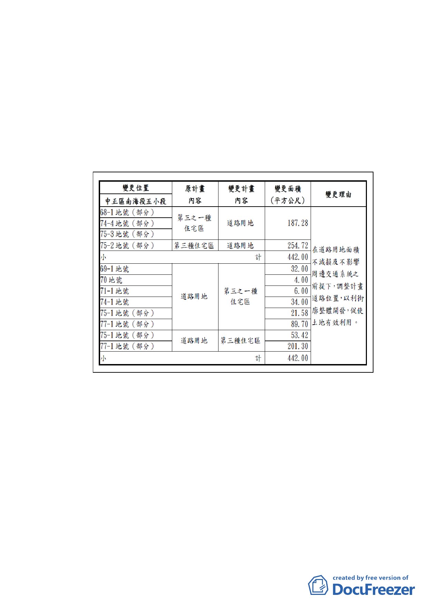

（三） 透過整體開發規劃，減少公共成本支出，活化公有土地
使用方式，增加土地利用效益。
（四） 加大與北側古蹟空間距離，基地臨古蹟側距離至 8m 以
上，配合開放空間留設，將 228 紀念館的綠意引入基地
內，延續綠帶景觀的草坡形式，對周遭環境將更友善，
以維護基地北側古蹟保存區之完整性。
五、 變更細部計畫內容概述：（詳公展計畫書）
（一） 變更土地使用分區
（二） 土地使用分區管制
依「臺北市土地使用分區管制自治條例」及相關規定辦
理。
（三） 修訂更新計畫內容
修訂計畫內容詳下表，其餘未變更部分依100年9月16日
府都新字第10002563800 號函公告之『劃定臺北市中正
區南海段五小段68-1地號等17 筆土地為更新地區』辦
理。
-3-